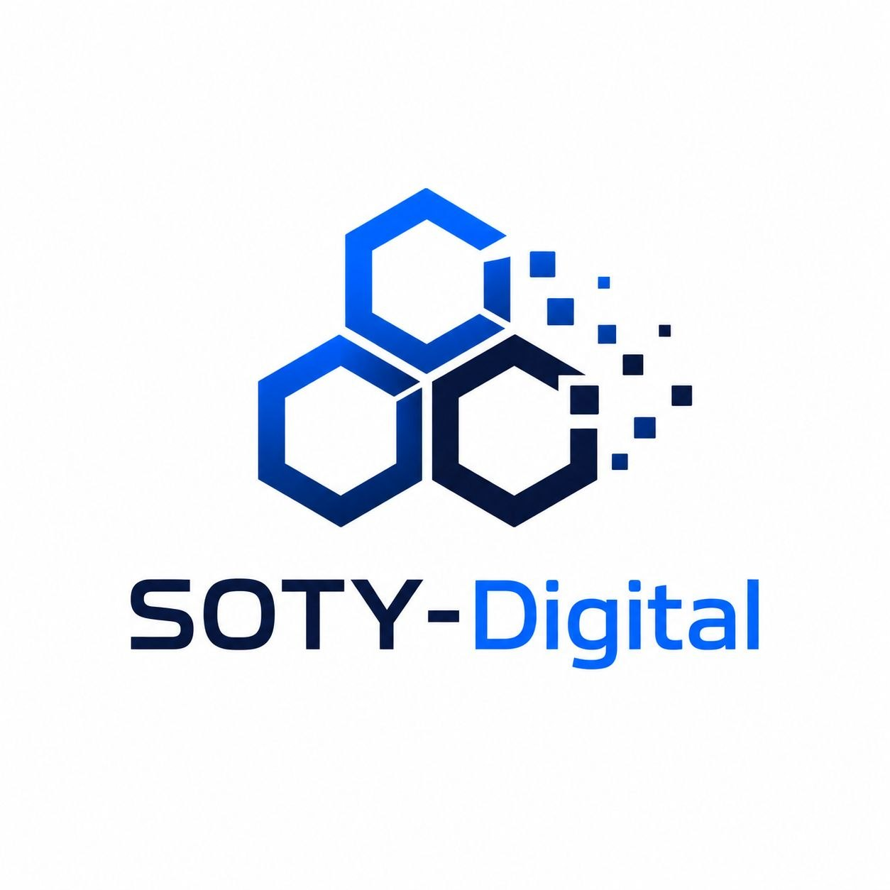

Создаём Telegram-ботов
для вашего бизнеса
Автоматизируем общение с клиентами, приём заказов и поддержку. От идеи до запуска за максимально короткий срок.
Обсудить проектО компании SotyDigital
SotyDigital специализируется на автоматизации бизнес-процессов с помощью современных digital‑инструментов. Мы помогаем компаниям выстроить эффективную коммуникацию с клиентами, ускорить обработку заказов и снизить нагрузку на сотрудников. Наше основное направление — разработка и внедрение чат‑ботов для Telegram, WhatsApp и других мессенджеров, которые берут на себя рутинные задачи: от консультаций до проведения платежей.

Наши проекты
Каждый бот — отдельная история. Нажмите на карточку, чтобы перейти на страницу с подробным описанием.
Свяжитесь с нами
Мы всегда открыты для новых проектов и готовы ответить на ваши вопросы.